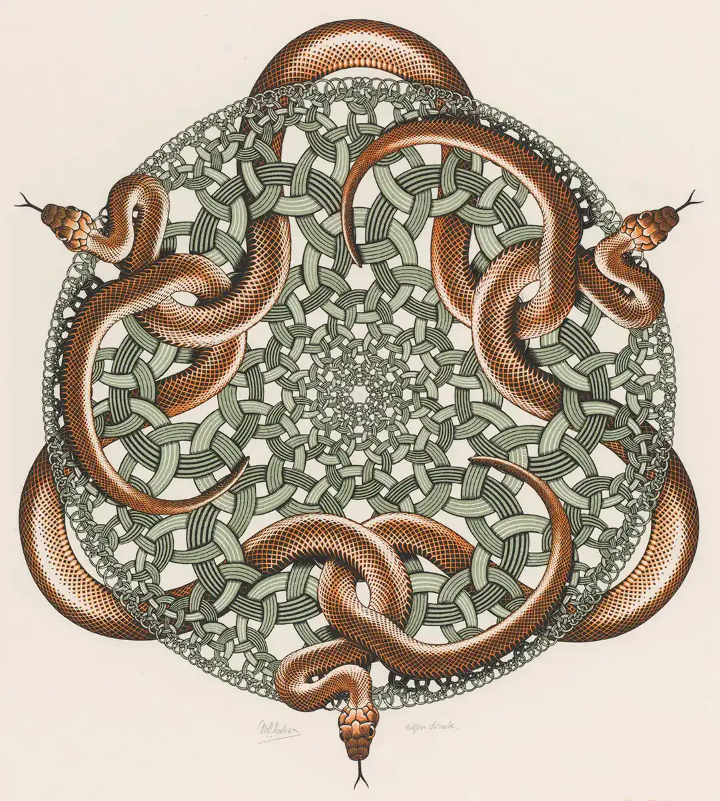
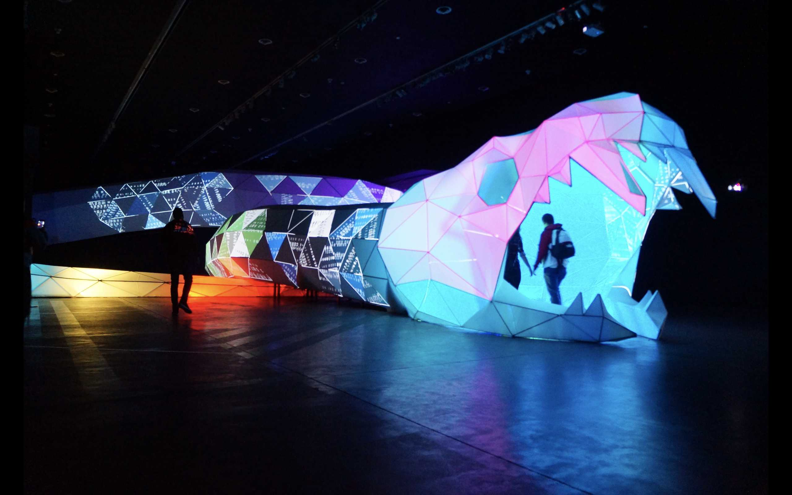

Investigación
Escher

Artista neerlandés enfocado en geometría, infinito y estructuras imposibles.
Lozano-Hemmer

Artista que trabaja con tecnología, algoritmos y sistemas generativos.
Biopus

Colectivo argentino que desarrolla instalaciones interactivas con participación del público.